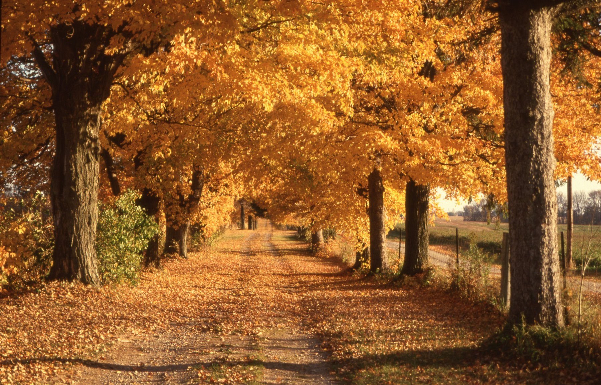

Day 1
Friday · 23 October
Maribor and Bled
The day after our anniversary · sunset ~18:00- Leave Dunakeszi
About 4 hours to Maribor. 23 October is a national holiday in Hungary, so expect busier roads.
- Maribor
Walk along the Drava and through the Lent quarter, lunch at the restaurant we picked, coffee and a short look around. About 1.5–2 hours.
- Check in at Breg
About 2 hours from Maribor.
- Lidl in Lesce
Shop for the whole weekend now, because most shops are closed on Sunday.
- Lake Bled shore
A walk by the lake until about 17:30, if the weather allows.
- Anniversary dinner at home3 years
Cooking together, candles, letters and gifts.
Note Mala Osojnica stays off today: we start early, and the path is slippery in rain.